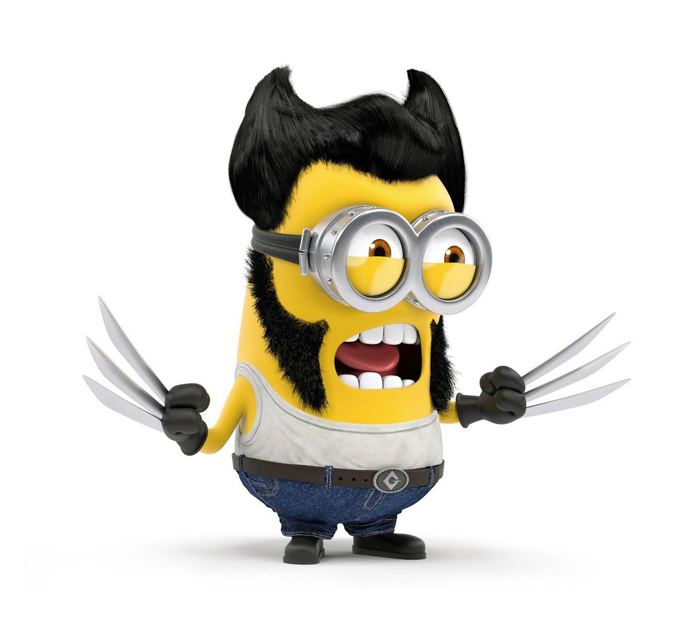

My report page in the course Web applications

My name is Christian Zaar, born and raised in Hässleholm, Skåne. In my youth I liked to ride motocross. Started riding when I was 6 years old and kept riding and competing until i was 15 years old. Then i started doing Martial arts and other stuff. I've been working as a welder, truck driver and automationengineer. When I was 26 I attended YHSyds Automationengineer education there I "found" programming. That interrest eventually lead me to HKR and datasystemutvecklingsprogrammet
Wright now im looking forward to this course. Seems fun... Yaay!